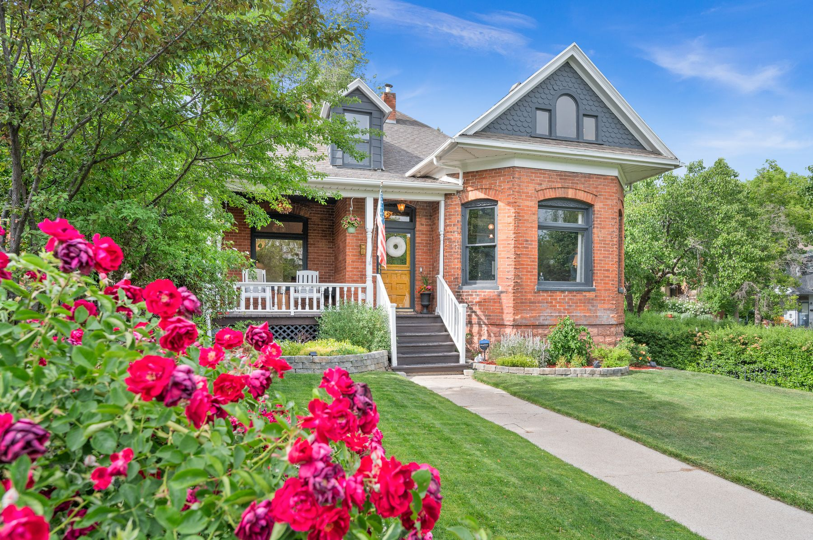
Natalia brings historic homes back to their era…with a one-of-a-kind modern twist. She lives in every house she designs, learns it, transforms it — then lets it go and starts again.
A historic home with real bones, real character, and real soul…ready for more.
Every decision is tested by living there. The house tells her what it wants.
Period-correct restoration, modern livability, and a fanatical layer of detail.
The house goes to market fully realized. The next chapter begins all over again!
Honoring the era the house was born in — mouldings, hardware, proportions, truth.
Kitchens, baths, light and flow built for how a family actually lives today.
Kahlo meets Queen Victoria. Color and pattern no one else would dare.
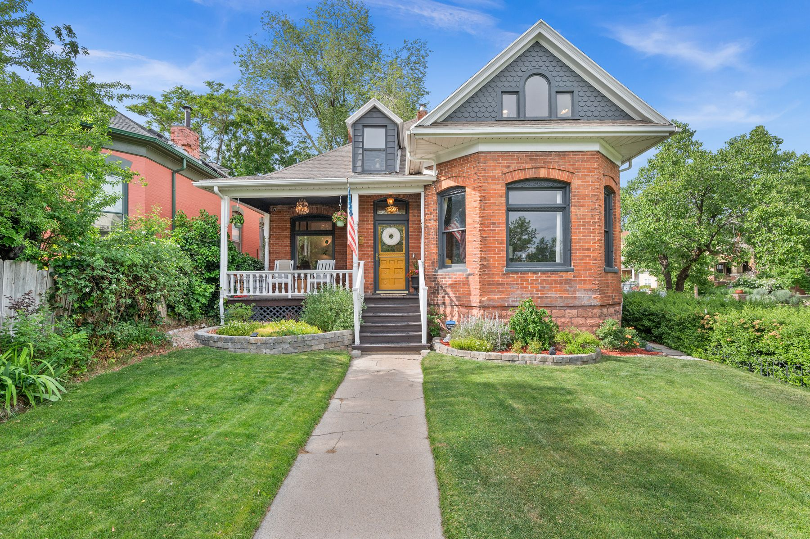
Built at the turn of the century by C.D. Schettler, the guitar virtuoso who played Carnegie Hall in 1904 and serenaded this very porch. A house made by an artist — waiting a hundred years for another one.
Some designers are made in lecture halls. Natalia was made here. The house was the classroom, the sweat was the tuition, and every wall she opened taught something no syllabus carries. Nobody hands out permission to have an eye — you pick up a brush and find out.
Natalia gave it its music back: blush ceilings under Empire crystal, a terracotta dining room with a Botero on the wall, tartan in the study, a Sevillian garden in the pantry, unlacquered brass everywhere. Period correct. Fanatically hers.
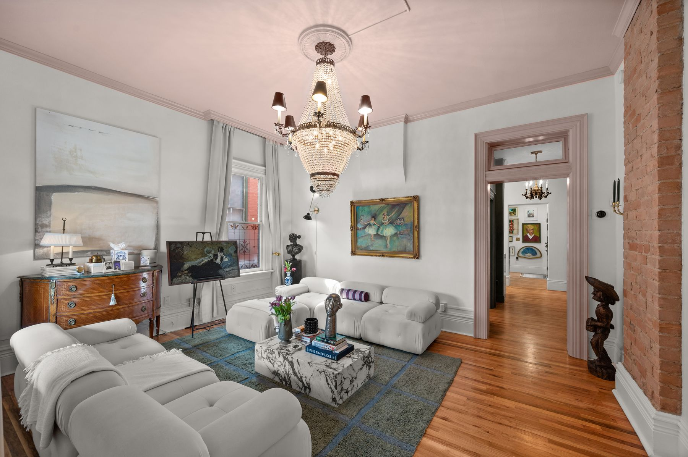
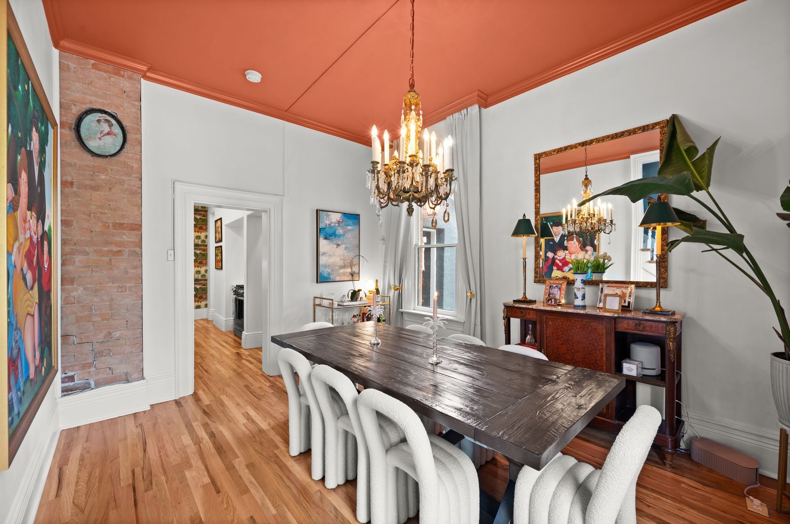
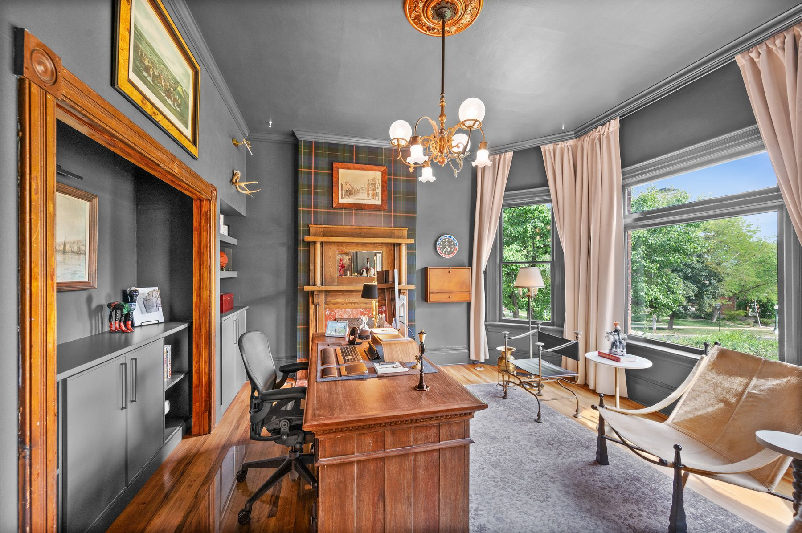
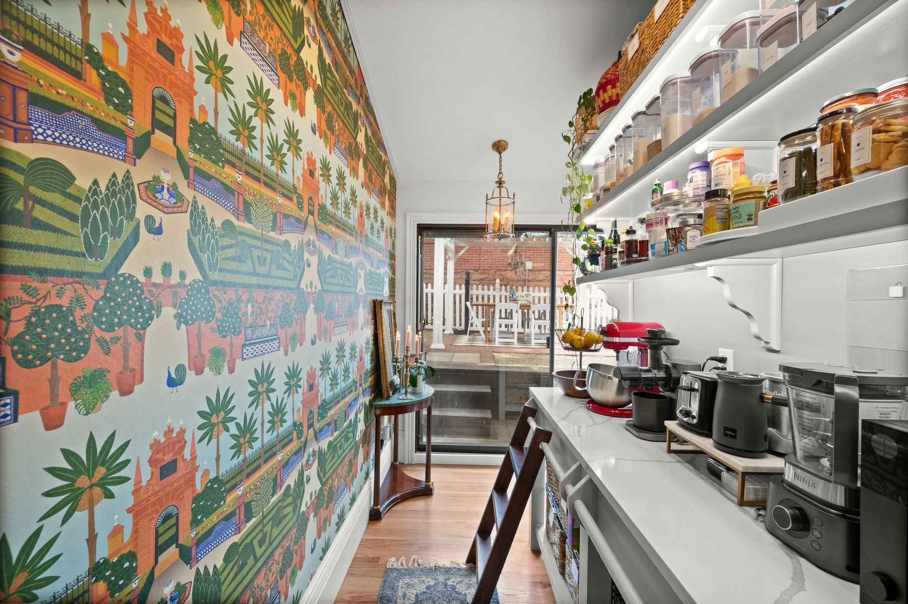
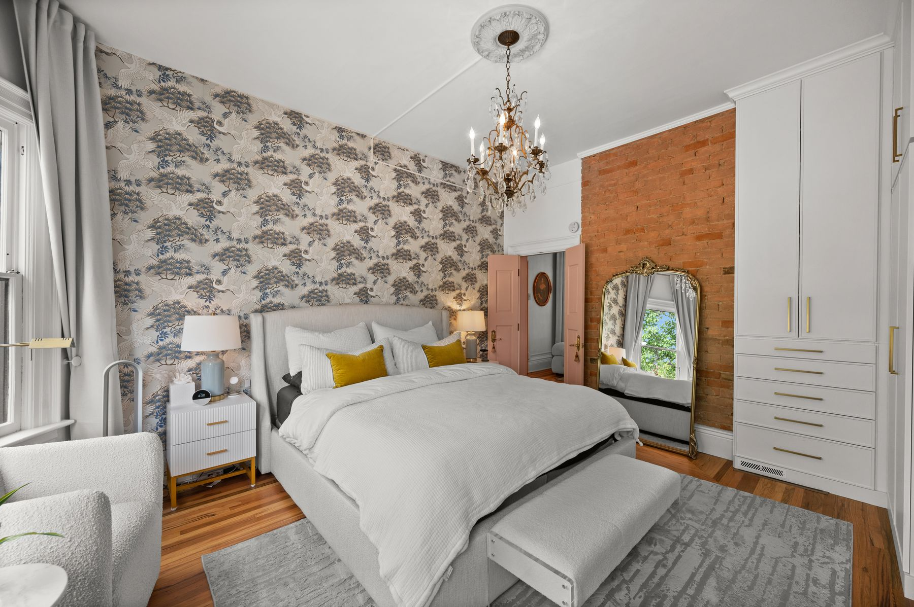
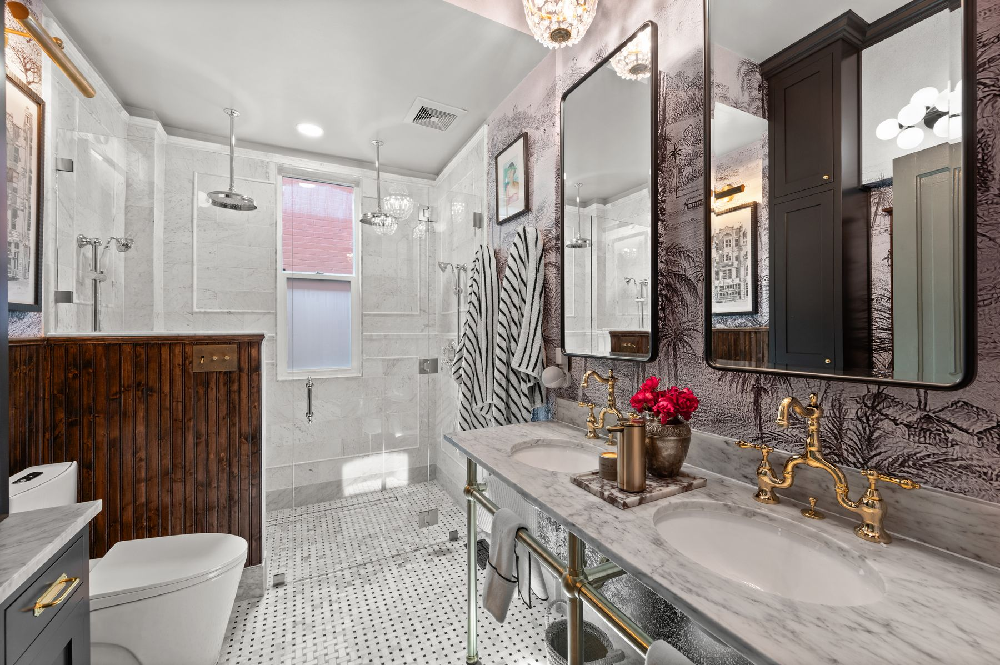
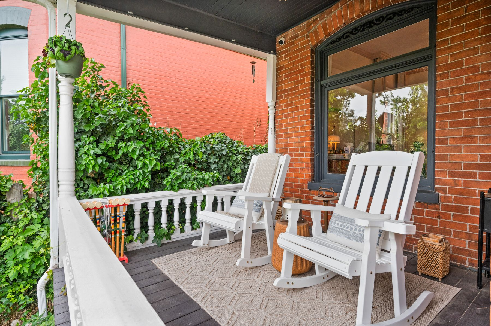
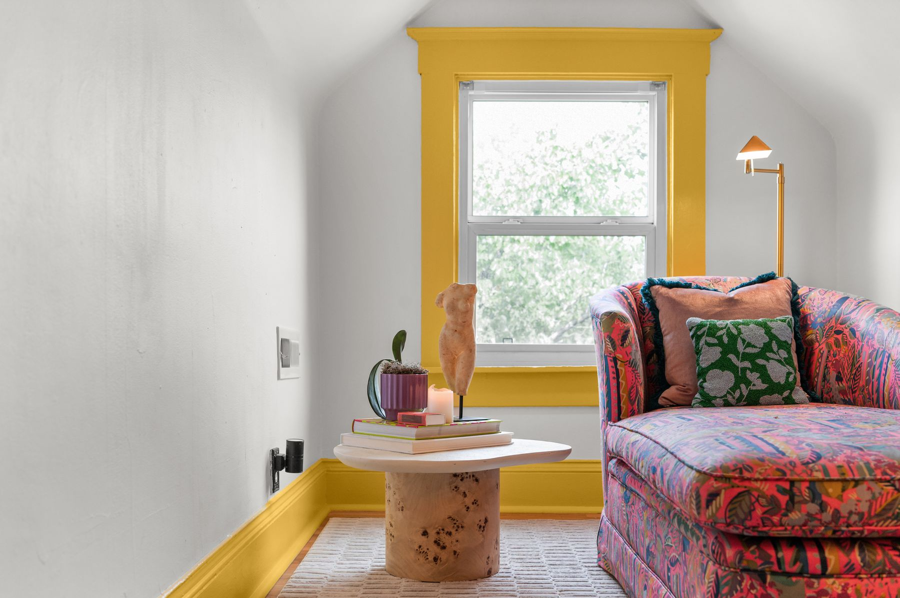
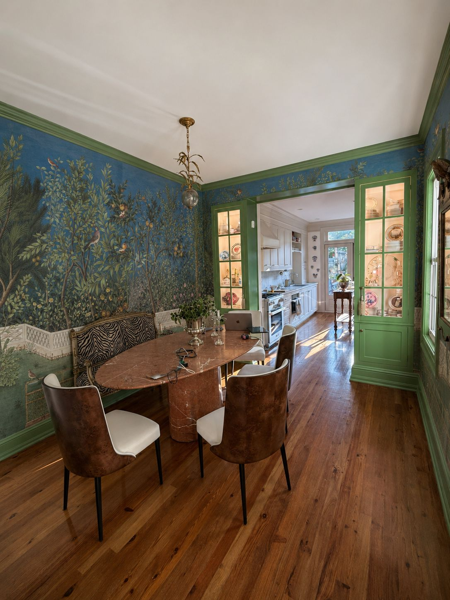
A c. 1900 rowhouse between M and Olive, with a rare garden out back and two years of decisions ahead. Chartreuse has already claimed the kitchen; a hand-painted garden has claimed the dining room.
The dining room garden mural is up — birds included.
The kitchen went chartreuse. No regrets.
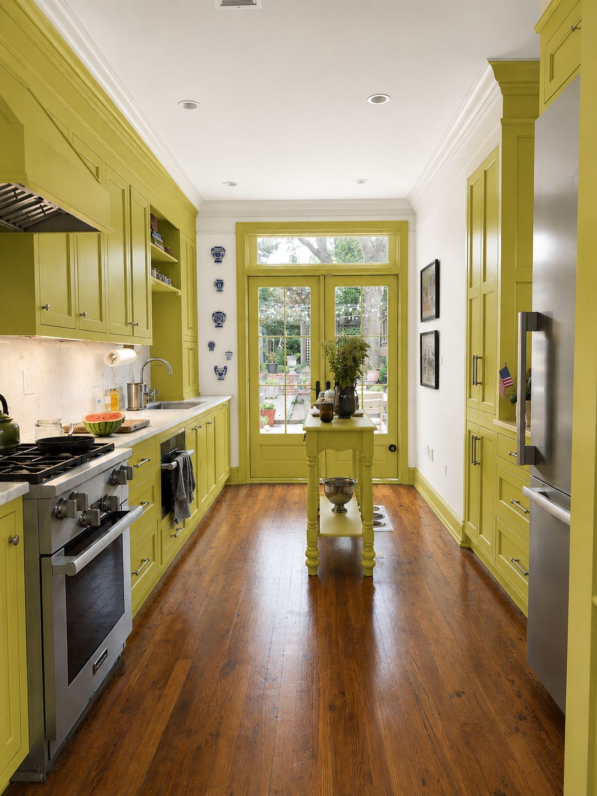
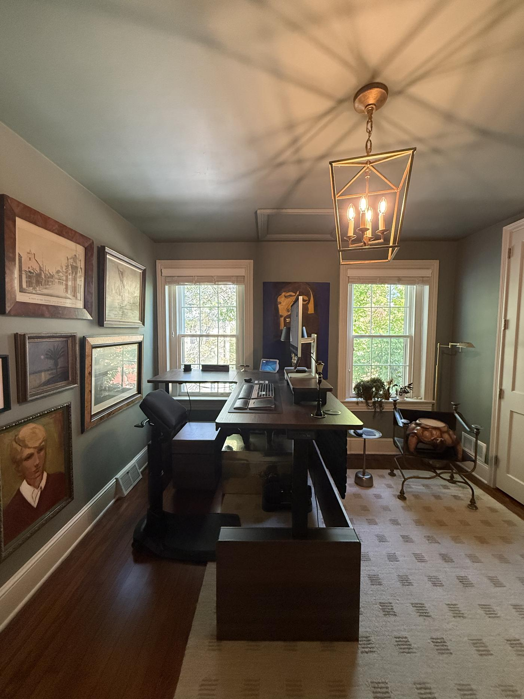
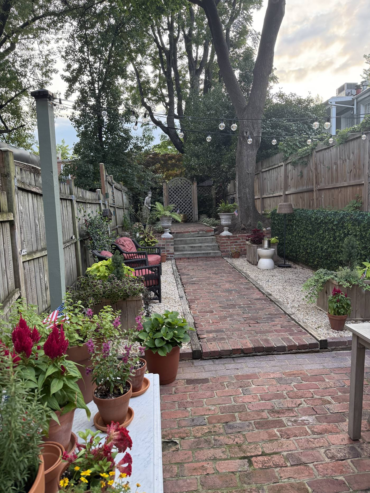
Natalia occasionally takes consults — a walkthrough of your space and an honest point of view on what it could become. If you'd like hers, write her.
Write NataliaNatalia Lawrence believes a house only reveals itself to the people who live in it — so she moves in. For a couple of years at a time she inhabits each project, restoring what its era intended and layering on what only she would dare: Colombian color poured over Victorian bones, pattern where others whisper beige, joy treated as a building material.
Her last chapter was the C.D. Schettler Home in Salt Lake City's Avenues — a guitar virtuoso's Victorian, brought back note by note, gone in five days. The current one is a turn-of-the-century rowhouse in Georgetown, unfolding room by room in real time.
She is also the founder of Hosting Closet — the same eye, set at the table.
All Washington — Nats caps, Bullets blue, and roots growing deeper in the District.